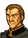

Narration
紫竜山の山賊そうどうに決着をつけた
リーフたち『解放軍』は
無事であると知らされた
レンスターの遺臣たちと合流すべく
彼らの隠れ住んでいるという
ハンニバルの山荘を目指す・・・
Opening 1

マーロック、このあたりだな

はっ
まちがいありません
それにしても、山賊どもめ
わがトラキアの民を苦しめるとは
ただではおかぬぞ

それにしても
わざわざ父上がここまで
お出になることもありませんのに・・・
いや
国王たるもの
どんな細事でも知っておかねばならぬ
それに、アルテナ
おまえと遠出するのも久しぶりだ
まあ、よかろう
はい
私は父上とごいっしょできて幸せです
アリオーンも誘ったのだが
本城を留守にできぬとぬかしおったわ
愛想のないやつだ
兄上は
父上のお力になりたいと
がんばっておいでなのです
まあ、わしがあいつのとしには
国王として
すべてを取りしきっていたからな
アリオーンにも
がんばってもらわねばならぬが・・・
私も、精一杯がんばって
父上や兄上の
お力になりたいと思っています
そうだな
おまえたち二人には
このトラキアの未来をたくしたい
北には豊かな実りが野をおおい
南には多くの富が山々にうずもれている
そのどちらがかけても
トラキアは自立できぬ
このトラキアを再び一つに・・・
そう、ダインとノヴァが作り上げた
理想の国に戻すことがわしの望みだ
そのためならば
地獄に落ちることもいとわぬ・・・
・・・父上？
アルテナ・・・
はい
・・・風が出てきたようだな
ここはマーロックにまかせて戻るとするか
はい、父上！
うむ
マーロック！
はっ！
あとはまかせる
これだけの兵を与えたのだ
失敗はぜったいに許さぬぞ！
山賊どもを掃討せよ
一人残らず殺せ
わが民を苦しめた代償が
どれほど高くつくか
やつらに思い知らせてやるのだ！
はっ、お任せください！
Opening 2

父上！ トラキア軍です！
南方一帯、攻めあがってきます！！

トラバントめ
われらのことに気づきおったか！
しかしまずいな
グレイドはターラに行っている
今この山荘にいるのは
実戦を知らない若者たちばかりだ
私が敵をひきつけます
父上は彼らを連れて脱出してください
そうもいかぬ
ハンニバル将軍の
知らせによると
リーフ様が
フィアナとマンスターの戦士団をひきいて
こちらにむかっておられるそうだ
わしは王子をお待ちせねばならぬ
わかりました
では私が防衛の指揮をとりましょう
王子が来られるまで
きっと守りきって見せます
ケイン！
アルバ！
ロベルト！
出陣よ！
私に続いて！
Opening 3

あれが
目的の山荘ですな

みんな元気だろうか・・・
・・・まわりに軍隊がいるようだが
ドリアスたちだろうか？
軍隊ですって？
・・・いかん！ あの装備はトラキア軍だ！
なんだって！
あそこはハンニバル将軍の山荘だろう？
隠れていたのが
見つかったのかもしれません
それとも、ハンニバル将軍が密告したか・・・
やめろ！ アウグスト！
ハンニバル将軍はそんな方ではない
・・・いずれにせよ
救援に向かわねばなりませんな
山荘を落とされるようなことがあれば
トラキアの解放やレンスターの再建など
とてもおぼつきませんぞ
Talk: Leif → Selphina
リーフ様！
おなつかしゅうございます！！
私です！ セルフィナです！
セルフィナ！
本当にセルフィナなのか！
リーフ様・・・ほんとに・・・
これは夢ではないのですね
あの幼かったリーフ様が・・・
私のひざもとで心地よくねむっておられた
あのリーフ様が・・・
こんなにもご立派になられて・・・
ああっ
なんといえばいいのでしょう・・・
セルフィナ
泣きたくなるのはぼくのほうだよ
セルフィナもドリアスも
ぼくのために殺されたとばかり・・・
もう一度会えるなんて
思ってもみなかった・・・
ぼくは母上や姉上を覚えていない
ぼくは肉親のぬくもりを知らない
だから、ラケシスを母上のように
セルフィナを姉上のように思っていた
いつも
セルフィナに無理ばかり言ってたね
今でもはっきり覚えているよ
リーフ様・・・
そんな・・・
もったいないお言葉・・・
・・・ラケシス様は
まだお戻りには・・・
うん・・・
イザークに出かけたままだ・・・
・・・そうですか・・・
大丈夫ですよ
ラケシス様のことです
きっとどこかでお元気におすごしですよ
きっと、きっとまた会えますわ
リーフ様
私たちだってお会いできたのですもの
Talk: Selphina → Finn
フィン様
お久しぶりです！

きみは・・・？
私のことをお忘れですか？
セルフィナです、フィン様
セルフィナ？ ドリアス伯爵の娘の？
はい
・・・まさか
・・・あのおさげの女の子が・・・
十年もたてば女は変わります
今はグレイドの妻ですし
グレイドだって！？ 彼は無事なのか？
会いたい！
彼に会わせてくれ！
今は不在です
ターラ救援に出向いているのですが・・・
そうか・・・残念だな
軍務とあればやむをえないことだが・・・
Only if Talk: Leif → Selphina was seen first
フィン様は
私よりグレイドの方に
きょうみがおありみたい
昔からぜんぜん
変わっていらっしゃらないのね
女性には冷たい方だもの
冷たい？・・・
そんなつもりはないが・・・
それならなぜラケシス様を
ほうっておかれたのです？
あの方の悲しみを
わかっていらしたはずなのに・・・
・・・私にはなんのことだか
わからないが・・・
いえ！
フィン様はわかっていらっしゃいます
なのにわからないふりをしている
ひきょうだわ、フィン様は！
セルフィナ
久しぶりに会ったのだ
もういいだろう・・・
あっ・・・
ごめんなさい
そうですね
久しぶりにお会いしたというのに
失礼なことばかり・・・
いや、いいんだ
その話はまた後で聞かせてもらおう
今はまず戦うことだ
はい フィン様・・・
Talk: Carrion → Selphina

セルフィナ様
ただいま戻りました
カリオン
大切なお役め、ご苦労様でした
いえ、私などがお役に立てるのは
これくらいですから
私もはやくグレイド様のような
りっぱな騎士になって
リーフ様のお役に立ちたいと願って
いるのですが・・・
非力な自分がはがゆくてなりません
カリオン、あせってはだめです
それでは命を失うことになりますよ
でも、もうそろそろ
これを渡すときなのかもしれませんね
これは？・・・
ずいぶんりっぱな剣ですが・・・
これはエリートの剣とよばれるもの
あなたのお母様から預っていました
カリオンがりっぱな騎士になったら
渡すようにと頼まれて・・・
母上が！？
ええ、病で亡くなられたときは
あなたはまだ幼くて・・・
この剣は戦死されたあなたの父上が
愛用されていたそうですよ
父上の・・・
レンスターの聖騎士だった父上の剣・・・
そうです
大切にしなければならないわ
はい！
セルフィナ様
ありがとうございます！！
When the enemy seizes the mountain villa
リーフ様！ 大変です！
山荘が落ちました！
なんだって！
それじゃ、ドリアスたちは・・・
レンスターの旧臣は
ほとんどこの山荘に
集まっていたということです
その彼らが
全滅した今
残念ですが
レンスター王国の再建は
あきらめるしかないでしょう
After seizing
ドリアス！！
リーフ様・・・
よくご無事で・・・
ご立派になられましたな・・・
なにもかも
ドリアスとフィンのおかげだ
おまえたちの犠牲のおかげで
ぼくはここまで生きてこられた・・・
なんともったいない・・・
いや
これは私としたことが・・・
としのせいか
涙もろくなりましたな・・・
としなどとそんな・・・
！！
ドリアス！
その右腕は・・・まさか・・・
ああ、これですか
いや、たいしたことはありませぬ
アルスターでの戦いで
少し油断しました・・・
おはずかしいことです
アルスターで・・・
じゃあ
ぼくたちを逃がすために・・・
な、なんてことだ！
ぼくのために・・・
ぼくのためにドリアスは・・・
ははは
そのように気にせずともよろしいのです
このおいぼれの体など
もともと大してお役に立ちませぬ
それよりもリーフ様
ターラへ行かれるのなら
グズグズしてはおられませぬ
グレイドからの便りによれば
帝国の総攻撃が
まもなく始まりそうだということ
さあ
ノヴァの軍旗のもとに
勇者は集いましたぞ
新生レンスター王国軍
北トラキアの解放を目指して
出陣いたしましょう！！
そのためには、まず
外のトラキア兵ですな
そのことですが
なにやらトラキア軍の動きが変です
こちらへの
攻撃を止めて動こうとしません
それはおかしいな・・・
リーフ様、考えていても始まりません
私がちょっと様子を見てまいります
ここで少しお待ちください
(The scene moves to the map)
うーむ
あの男のいった通りだ
こちらへの攻撃をやめておる
しかし
いったいどうしたというのだ？
ん？ なんだ？ あの女竜騎士は・・・
トラキア軍に向かって
何か言おうとしているようだが・・・
(Altena appears)
トラキア全軍につぐ
私は王女アルテナだ
ハンニバル将軍より
火急の知らせが入った
この山荘にいるものは
山賊ではない
民を山賊から守らんとして
将軍がそしきされた
傭兵部隊であるとのことだ
よって
これ以上の戦闘は無用！
全軍、ただちに撤退せよ！
Enemy turn 20
うーむ
まだ山賊どもを掃討できぬか
仕方ない
ランスアーマー部隊に
突撃の合図を送れ
Enemy turn 23
おのれ、なにをグズグズしておる！
全軍、これより総攻撃にうつる
なんとしても山賊どもを一掃するのだ！
House top
.png)
あなたたち
山荘に住んでる人たちと
お知り合いなんですか？
これ、裏山で見つけたんですけど
あの人たちのモノじゃないかしら
持っていってあげてくださいな
House south
.png)
アンタ
ちょっと顔色悪いぜ
働きすぎじゃねぇのか
そんなときには
このＳドリンクがおすすめだ
つかれた体にぐぐっと一本
たちどころに
ゲンキモリモリってスグレモノだ
つかれて出撃できねぇ時だって
持たせとくだけで大丈夫なんだぜ
サンプルで一本やるから
気に入ったら
隣の道具屋で買うといい
ここを逃したら
あとはターラ市しか売ってないから
有り金はたいてでも
買っておいたほうがいいぜ
Merloch: battle quote
おまえたち
山賊ではないな！
いったいなにものなんだ！
Merloch: defeat quote
トラバント陛下
お許しください・・・
Merloch: release quote
(Cannot be captured)